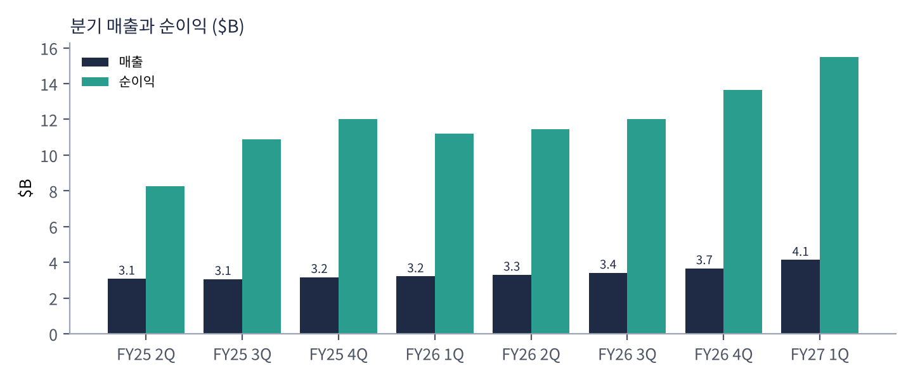
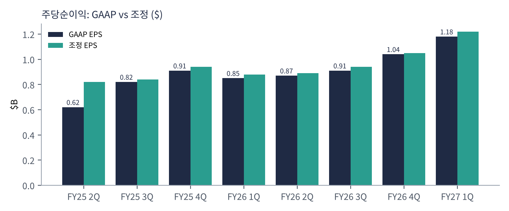
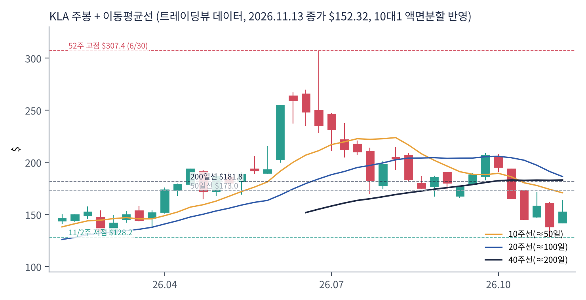
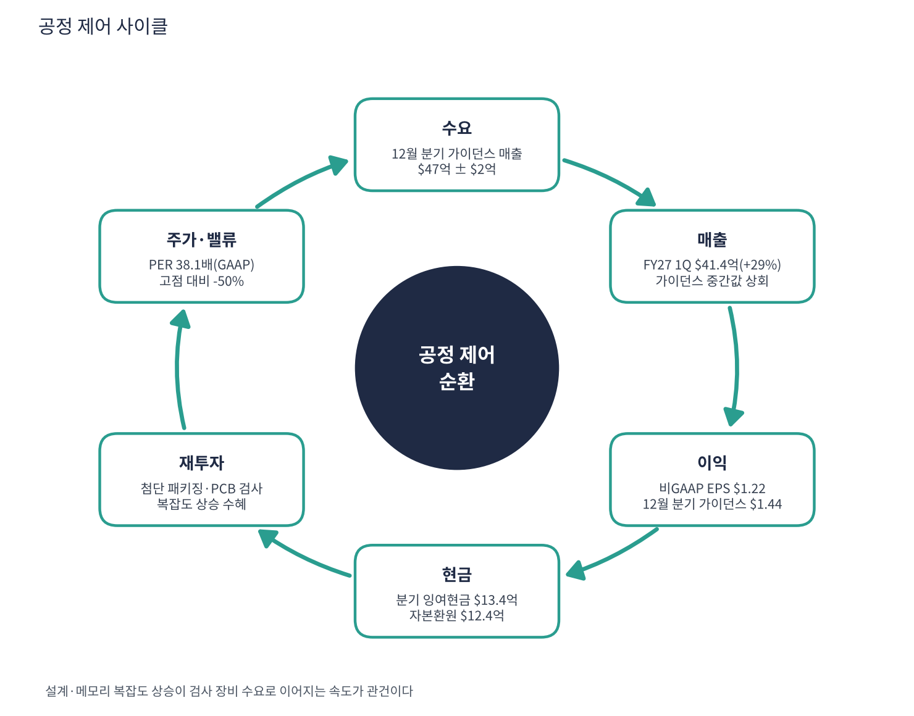

KLA는 반도체 웨이퍼·마스크·패키징·회로기판의 결함을 찾는 검사·계측(공정 제어) 장비와 서비스를 파는 회사다. 회계연도는 6월 결산이고 2026.6.11에 10대 1 액면분할을 했다. 9월 분기 매출이 29% 늘고 12월 분기 가이던스를 $47억으로 높였지만, 주가는 6월 고점 대비 절반인 회사다.
| 항목 | 내용 |
|---|---|
| 종목 | KLA Corp (KLAC) · NASDAQ · 반도체 공정 제어 장비 · 본사 미국 캘리포니아주 밀피타스 |
| 시가총액 | 약 $1,985억 · PER 38.1배(GAAP TTM), 조정 37.2배 · P/S 14.23배 (11/13 종가 $152.32, 분할 반영) |
| 최근 분기(FY27 1Q, 9월) | 매출 $41.36억(+29%, 가이던스 $40억 ± $2억 상회), GAAP 순이익 $15.5억·EPS $1.18, 비GAAP EPS $1.22 |
| 가이던스(12월 분기) | 매출 $47억 ± $2억, 비GAAP 총이익률 62.5% ± 1%, 비GAAP EPS $1.44 ± $0.11 |
| 현금흐름 | 분기 영업현금 $15.3억, 잉여현금 $13.4억. 최근 4분기 잉여현금 $40.4억, 자본환원 $37.9억 |
| 현금·부채 | 현금 약 $47억, 총차입금 약 $60억(스캐너) |
| 직책 | 인물 | 역할·특징 |
|---|---|---|
| CEO | 릭 월리스(Rick Wallace) | '9월 분기가 모든 핵심 지표에서 가이던스 중간값을 넘었다'고 밝힘(보도) |
경영 스타일: '가이던스를 보수적으로 잡고 넘기며 주주환원을 꾸준히 한다'. 최근 두 분기 모두 가이던스 중간값을 넘겼고, 분기 자본환원은 $12.4억이다. 경영진은 2026년 하반기에 성장이 가속하고 2027년까지 이어질 것으로 본다(보도).
설계가 복잡해질수록 결함 검사가 늘어 수요가 커진다. 로직·메모리 복잡도, 첨단 패키징, PCB·부품 검사가 성장 동력이라고 회사가 밝혔다.
경영진은 AI 인프라 구축의 핵심 경로에 KLA가 있다고 본다(보도). 장비 판매와 서비스가 함께 반복 수익을 만든다.
| 분기 | 매출 | 순이익 | EPS | 조정 EPS | 특이 사항 |
|---|---|---|---|---|---|
| FY25 2Q | $30.8억 | $8.2억 | 0.62 | 0.82 | GAAP이 조정보다 크게 낮음(원인 미확인) |
| FY25 3Q | $30.6억 | $10.9억 | 0.82 | 0.84 | |
| FY25 4Q | $31.7억 | $12.0억 | 0.91 | 0.94 | |
| FY26 1Q | $32.1억 | $11.2억 | 0.85 | 0.88 | |
| FY26 2Q | $33.0억 | $11.5억 | 0.87 | 0.89 | 매출 +7% |
| FY26 3Q | $34.1억 | $12.0억 | 0.91 | 0.94 | 매출 +12% |
| FY26 4Q | $36.5억 | $13.6억 | 1.04 | 1.05 | 매출 +15% |
| FY27 1Q | $41.3억 | $15.5억 | 1.18 | 1.22 | 매출 +29%, 조정 EPS +39% |


흐름 요약: 분기 매출은 $30.8억에서 $41.3억으로 늘었다. 전년 대비 성장률은 +7%, +12%, +15%, +29%로 가속했다. 순이익은 $8.3억에서 $15.5억으로 늘었다. 분기는 회계연도 기준이며 주당 값은 액면분할을 반영했다. FY25 2Q의 GAAP EPS($0.62)가 조정 EPS($0.82)보다 크게 낮아 이 분기에 일회성 비용이 있었던 것으로 보이나 원인은 확인하지 못했다. 영업이익과 분기 설비투자는 구하지 못해 뺐다.
| 항목 | 내용 | 비고 |
|---|---|---|
| 사업 | 웨이퍼 검사·계측, 마스크 검사, 패키징·PCB 검사, 서비스 | 제품별 매출 세부는 구하지 못함 |
| 성장 축 | 파운드리·로직 선단 설계, 메모리 복잡도, 첨단 패키징 | 회사 설명 |
| 자본환원 | 분기 $12.4억(최근 4분기 $37.9억) | 배당·자사주 |
부문별 매출 비중과 지역별 비중은 이 자료에서 구하지 못했다. 확인한 것은 매출 규모, 이익률, 현금흐름과 경영진 설명이다.
KLA는 '설계와 공정이 복잡해질수록 검사 수요가 늘어난다'는 구조에 올라타 있다.
| 축 | 최근 움직임 |
|---|---|
| AI 로직·메모리 | 복잡도 상승이 검사 수요로 이어짐 |
| 첨단 패키징 | 패키징 검사 신규 성장 |
| 이익률 | 12월 분기 총이익률 62.5% 제시 |
| 위험 | 중국·수출 규제, 사이클 정점 우려 |

| 이동평균 | 값 | 종가 대비 | 해석 |
|---|---|---|---|
| 5일선 | $155.00 | -1.7% | 현재가가 아래 |
| 20일선 | $153.72 | -0.9% | 현재가가 아래 |
| 50일선 | $172.99 | -11.9% | 현재가가 아래 |
| 100일선 | $190.11 | -19.9% | 현재가가 아래 |
| 200일선 | $181.77 | -16.2% | 현재가가 약 16% 아래 |
주봉 흐름(분할 반영): 2025년 9월 $104~110 → 2026년 1월 $140~157 → 3월 $134~150 → 6월 고점 $307.4 → 9월 $177~207 → 10월 $146~166 → 11월 둘째 주 $128(저점) → 11/13 주 $152.3. 모든 이동평균선이 현재가 위에 있다.
| 규칙 | 기준 | 현재 값 | 신호 |
|---|---|---|---|
| 장기 추세 필터 | 종가 vs 200일선 | $152.32 < $181.77 | 매도 |
| 중장기 교차 | 50일선 vs 200일선 | $172.99 < $181.77 | 매도 |
| 단기 교차 | 20일선 vs 50일선 | $153.72 < $172.99 | 매도 |
| 돈키언 채널 | 55일 고가 $208.68 / 저가 $128.16 | 중간값 $168.42 아래 | 매도 |
| 1개월 모멘텀 | 21거래일 수익률 | -12.7% (기준 $174.46) | 매도 |
| 3개월 모멘텀 | 63거래일 수익률 | -26.0% (기준 $205.76) | 매도 |
| 6개월 모멘텀 | 126거래일 수익률 | -15.6% (기준 $180.43) | 매도 |
| 12개월 모멘텀 | 252거래일 수익률 | +27.0% (기준 $119.90) | 매수 |
| 종합 (8개 평균) | -0.75 | 강한 매도 |
해석: 8개 신호 중 7개가 매도, 12개월 모멘텀만 매수(점수 -0.75)다. 14일 ATR $10.30 (6.8%)로 변동폭이 크다.
| 가격 | 무엇이 바뀌나 | 의미 |
|---|---|---|
| $153.7 돌파 | 20일선 | 20/50 신호는 50일선($173.0)도 넘어야 매수로 전환 |
| $168.4 돌파 | 돈키언 중간값 | 채널 신호 매도 → 매수 |
| $174.5 돌파 | 1개월 기준가 | 1개월 모멘텀 매도 → 매수 |
| $180.4 / $181.8 돌파 | 6개월 기준가 / 200일선 | 6개월 모멘텀·장기 추세 신호 매도 → 매수 |
| 구분 | 가격대 | 근거 |
|---|---|---|
| 저항 1 | $154 ~ 173 | 20일선 $153.7, 50일선 $173.0 |
| 저항 2 | $182 ~ 190 | 200일선 $181.8, 100일선 $190.1 |
| 지지 1 | $128 | 11월 둘째 주 저점 |
| 하방 | $128 이탈 시 | 55일 저점 $128.2 아래는 직전 기준 가격대 약함 |
7개 신호가 매도라 신규 진입은 보류한다. 20일선($154)과 200일선($182)을 되찾고 신호가 바뀌면 계획 비중의 30%만 진입한다. 이미 보유 중이면 $128 종가 이탈 시 정리한다. 12월 분기 실적이 확인 지점이다.
| 악재 요인 | 내용 | 강도 |
|---|---|---|
| 밸류에이션 | P/S 14.2배(동종 최고), 조정 PEG 2.09 | 높음 |
| 사이클 정점 우려 | 매출 +29%인데 주가는 고점 대비 -50% | 높음 |
| 수출 규제 | 중국 판매 제한 규정 영향 가능(회사 위험 요인) | 중간 |
| 순부채 | 차입금이 현금보다 약 $13억 많음 | 중간 |
| 추세 | CTA -0.75, 7개 신호 매도 | 높음 |
| 티커 | 회사 | 시가총액 | PER(TTM) | PEG | P/S | EPS 성장(YoY) |
|---|---|---|---|---|---|---|
| KLAC | KLA | $198B | 37.2배 | 2.09 | 14.23배 | +18% |
| LRCX | 램리서치 | $282B | 33.6배 | 0.70 | 11.24배 | +48% |
| AMAT | 어플라이드 머티어리얼즈 | $294B | 29.4배 | 0.65 | 8.83배 | +46% |
| TER | 테라다인 | $39B | 28.6배 | 0.13 | 8.31배 | +217% |
| ASML | ASML | $565B | 36.8배 | 0.71 | 12.53배 | +52% |
| MU | 마이크론 | $881B | 10.5배 | – | 6.88배 | +879% |
KLAC는 조정 EPS 기준, 나머지는 GAAP 기준(내 계산). TER·MU는 기저 효과로 PEG 비교가 어렵다. 비교 결론: KLAC는 PEG와 P/S 모두 비교군 중 가장 비싸다.
KLA는 총차입금이 현금보다 많다. 현금 약 $47억, 총차입금 약 $60억으로 순부채는 약 $13억이다.
| 지표 | 값 | 계산·출처 | 해석 |
|---|---|---|---|
| 현금 등 | 약 $47억 | 스캐너 | |
| 총차입금 | 약 $60억 | 스캐너 | 순부채 약 $13억 |
| TTM 잉여현금흐름 | 약 $40억 | 스캐너, 실적 자료 $40.4억 | 시총 대비 2.0% |
| TTM EBITDA | 약 $66억 | 스캐너 | EBITDA 마진 약 46%(내 계산) |
| 기준 | 값 | 비고 |
|---|---|---|
| P/S (TTM) | 14.23배 | 스캐너. TTM 매출 $145.0억 기준 내 계산은 13.7배 |
| P/FCF | 약 49배 | 시총 $1,985억 ÷ TTM 잉여현금 $40.4억(내 계산) |
| 동종 | LRCX 11.2, AMAT 8.8, TER 8.3, ASML 12.5, MU 6.9 | 11/13 스캐너 |
해석: P/S는 장비 동종 중 가장 높다. 스트레스 가정(내 가정): 12월 분기 가이던스 EPS $1.44를 4배한 연환산 $5.76에 PER 25배면 $144(-5%), 30배면 $173(+13%), 35배면 $202(+32%)다. 현재가는 PER 약 26배에 해당한다.
| 지표 | 값 | 판정 |
|---|---|---|
| PER (GAAP TTM) | 38.1배 | 트레이딩뷰, GAAP TTM EPS $4.00 |
| PER (조정 TTM) | 37.2배 | 최근 4분기 조정 EPS 합 $4.10(내 계산) |
| EV / EBITDA | 약 30.3배 | EV ≈ 시총 $1,985억 + 차입금 $60억 − 현금 $47억 = $1,998억, ÷ TTM EBITDA $66억(내 계산) |
| 방식 | PER | EPS 성장률 | PEG | 판정 |
|---|---|---|---|---|
| 트레이딩뷰 (GAAP TTM) | 38.1배 | +25.6% | 1.49 | 기준 초과 |
| 조정 EPS 기준 | 37.2배 | +17.8% | 2.09 | 기준 초과 |
| 조정 TTM $4.10 ÷ 직전 TTM $3.48 | – | – | – | 직전: FY25 2Q 0.82 + 3Q 0.84 + 4Q 0.94 + FY26 1Q 0.88 |
판정: 조정 PEG 2.09로 기준(1.0)을 넘음. GAAP 성장률은 FY25 2Q의 낮은 GAAP EPS가 기준에 들어가 부풀려져 있어 조정 EPS 기준을 대표값으로 쓴다. 12월 분기 가이던스 EPS $1.44는 전년 같은 분기($0.89) 대비 +62%여서 앞으로 성장률은 높아질 수 있다.

KLA의 사이클은 수요 → 매출 → 이익 → 현금 → 환원이다. 약한 고리는 주가·밸류다.
| 고리 | 현재 숫자 | 고리 강도 | 약해지는 신호 |
|---|---|---|---|
| ① 수요 | 12월 분기 가이던스 $47억 | 강함 | 가이던스 하향 |
| ② 매출 | FY27 1Q +29% | 강함 | 성장률 둔화 |
| ③ 이익 | 비GAAP EPS $1.22, 총이익률 약 62% | 강함 | 마진 하락 |
| ④ 현금 | 분기 잉여현금 $13.4억 | 강함 | 선수금 감소 |
| ⑤ 환원 | 분기 자본환원 $12.4억 | 진행 | 환원 축소 |
| ⑥ 주가·밸류 | 6월 고점 대비 -50%, P/S 14.2배 | 약함 | 호실적에도 하락 지속 |
구조: ①~④가 강한데 ⑥만 약하다. P/S가 동종 중 가장 높아 사이클 정점 우려와 밸류 부담이 겹친다.